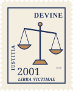
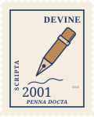
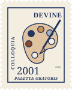
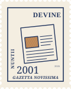
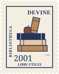
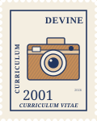

{{ p.year }}
{{ p.pre }}{{ p.me }}{{ p.post }} ({{ p.year }}). {{ p.title }}. {{ p.venue }}. {{ p.doiUrl }}
{{ p.abstract }}
I study how fear, threat, and bias shape the way we judge victims and wrongdoing — at the meeting point of moral psychology, implicit social cognition, and the law.
I'm a social psychology PhD student at Yale University with Dr. Melissa Ferguson in the Implicit Social Cognition Lab. I am an NSF Graduate Research Fellow (GRFP).
Previously, I was a lab manager in the Deepest Beliefs Lab (PI: Dr. Kurt Gray) at The Ohio State University and the University of North Carolina at Chapel Hill. I completed my B.S. in Biopsychology, Cognition, and Neuroscience at the University of Michigan, Ann Arbor, where I was also lab manager in the Well-Being, Health, and Interpersonal Relationships Lab (PI: Dr. Amie M. Gordon).
My research interests span moral psychology, victim blaming, implicit social cognition, and the psychology of law — with a focus on how fear, threat, and bias shape judgments about victims and wrongdoing.

Who counts as a victim — and who gets the blame?Why do we sometimes hold people responsible for the harm they experienced? I study how fear of crime, true-crime media, and assumptions about vulnerability shape moral judgments of victims.
Legal decisions hinge on human judgment. I study consent under social pressure (“Can I search your car?”), how victimhood is weighed in legal decisions, and how people judge deception.
As LLMs enter every part of our lives, I study how AI affects our relationships and decision-making.
My earlier work in Michigan’s WHIRLab focused on couples, caregiving, sleep, and physiology — how partners support one another and divide the load of new parenthood.

Writing{{ p.abstract }}

Presentations
What’s new!
Resourcesfor post-bacc and phd positions
Hi! I’m Helen, a PhD student in social psychology. My research sits at the intersection of psychology & law and moral psychology; I’m interested in questions about victimhood, blame & responsibility, and legal decision-making. ⚖️🧠
Before applying for a PhD this past fall, I was a lab manager for four years, and spent a lot of time compiling resources on applying for post-bacc and PhD positions. Finding and applying to both kinds of roles is really challenging, especially if you’re not in a position with direct mentors who can guide you. There’s a lot about this process that is unspoken.
With that in mind, I wanted to compile my sample applications and tips that helped me.
⭐ Huge credit to those who have made guides like this and inspired mine, especially: Dr. Lucy Lai, Claire Whiting, and Dr. Alex Lang.
I also created a Slack Workspace to post crowdsourced listings easily in one place. If you're a potential applicant, OR a current lab manager, grad student, or PI, please consider joining! It takes 2 seconds to drop a link to an opportunity and you can turn other notifications off easily.
Join the Post-Bacc Psychology Slack here! ↗Note: Post-bacc / post-grad / pre-doc positions all mean the same thing. Different labs and institutions use different labels: But they all generally mean a paid, part- or full-time research position intended to be held between completing your undergraduate and graduate degree.
These positions are becoming more popular as a way to gain experience and hone your research interests before beginning a PhD program.
I’ve been a lab manager in two social psychology labs: the WHIRLab for my final two years in undergrad, and the Deepest Beliefs Lab for two years between undergrad and grad school. In both labs, I led the review and interview process for my replacement, and in doing so, came up with some tips for how to secure a position.
There isn’t a central location for post-bacc positions to be advertised. In my experience, the best ways to find them are:
I’d also recommend being open and reminding your advisors (graduate students and PIs) that you’re on the job hunt — they can share opportunities they see with you directly as their peers post them.
Most post-bacc positions will ask for an academic CV/resume, cover letter, and references (usually 2, sometimes 3). Some may also ask you to complete short answer questions — e.g., write about your future plans, tell us about a project you’ve worked on, why you want to join this lab, etc.
My lab manager application materials from 2024, including my CV (at the time), cover letter, and second round short answer questions:
Other cover letter and CV examples can also be found on our post-bacc guide HERE.
I’m pro-cold emailing as long as you do it well. Best case scenario: you get a job! Worst case scenario: you get ghosted. Low risk, high reward.
Most post-bacc positions are posted between February - April [usually timed based on grad decisions, since their current lab managers may be deciding to go to grad school or not]. I wouldn’t email any current managers or PIs earlier than February, and definitely make sure they haven’t posted a position clearly anywhere (lab website, social media) before reaching out.
Keep the email short and easy to read for the recipient – you don’t necessarily need to attach a CV (I didn’t), and you don’t need to give your full life story if you’re just asking if they’re hiring.
Also, address the recipient correctly. If they have a PhD, their title is Dr. [last name]. Research has found that men and women are more likely to refer to a male professional with just his last name (like Einstein) than female professionals (like Marie Curie), and this perpetuates gender inequality in the sciences (Atir & Ferguson, 2018). Names and titles matter.
Colloquially, I was a manager for both a female PI and a male PI at different times, and I can’t tell you how many emails I received addressed to Ms. Female PI instead of Dr. Female PI. Not once did I get Mr. Male PI. Don’t do this!
Subject: Post-bacc opportunities in X lab?
Dear Dr. [Name],
I hope this email finds you well! My name is Helen Devine and I am a senior undergraduate at the University of Michigan studying psychology and graduating in May 2024. I currently work as Dr. Amie Gordon's lab manager in a social psychology lab at UMich. I am reaching out to inquire: do you anticipate hiring for a post-bacc position in your lab in the near future?
I've greatly enjoyed my time in my current lab, but am looking to gain more research experience in an area more aligned with my research interests in anticipation of attending graduate school in the future. I am very interested in the topics you study and would love to hear about any opportunities in your lab.
Thank you for your time and I look forward to connecting!
All the best,
Helen
First off all, congratulations!! Getting an interview for these competitive positions is a huge win. Usually, interviews are about 30 minutes, and are held with any combination of the current manager, graduate students, and lab PI. You should be prepared to answer questions about anything from your application (yes, even the tiny project from one bullet on your CV — you never know what the interviewers might find interesting and want to hear more about) and it’s a good idea to prepare for some general questions as well.
You’re pretty much guaranteed to be asked at the end if you have any questions for the interviewers. The answer is YES! Asking questions shows your interest, gives you the opportunity to learn more about the lab, and increases the odds of finding something to connect with your interviewer about.
There’s no hard and fast rule on what to ask. I’d stay away from questions that could be answered by doing your own research (e.g., if their team is explicitly on their website and you ask “who’s in the lab?”, it might look like you didn’t bother looking them up).
This is just my opinion, but I’d advise not spending time asking the interviewers questions that don’t give you a lot of information; like why did they join the lab, what research they’re excited about, why they like the lab, etc. They’re polite and easy for interviewers to answer, but I personally don’t think they tell you as an applicant much unique information. Sure, maybe once in a blue moon an interviewer might say “This lab is a terrible environment, don’t come here!”, but most times it’ll probably just be the same elaboration on “I liked my PI and the topics we study, and I got a job, so I joined.”
I highly recommend sending a thank you email within 2 days. Below is a template I used. The idea is to reiterate your interest and bump any of your experiences that you think fit the position based on the feedback you received from the interview.
Subject: [Lab name and role, ex. WHIRLab Manager] interview: Thank you for your time!
Hi Dr. [Name],
I want to thank you for taking the time to meet with me today and sharing more about [Lab Name, etc.]. Our interview today has solidified my enthusiasm for this position!
I appreciated the opportunity to discuss my research experience at Michigan and tell you more about my thesis project. I believe my 2 years of experience running a social psychology lab here have set me up for success to handle the survey building responsibilities and research database project in this role. As I mentioned, I'm very excited about the potential for pursuing additional research projects and immersing myself in your lab culture as well.
Please let me know if there is any additional information I can provide.
Have a great weekend and I look forward to connecting more soon!
All the best,
Helen
Disclaimer: I don’t have a PhD [yet! 💭] and I have not reviewed PhD applications. I’m sharing copies of my actual applications in the hope that they can help you form yours. These aren’t meant to illustrate requirements of an app, but rather to get your thoughts flowing on how you can best frame yourself and your experiences.
I applied to Social Psychology PhD positions in 2025 for admission in Fall 2026. Other academics have made great, well-informed guides on how to navigate the application process [notably, Dr. Lucy Lai has an all-inclusive one for all stages of the process here]. I’ll defer to them for their more informed resources. I’m including my applications below in the hope that they are helpful to someone else in the same way that reading other applications was during my process 😊
My full PhD application materials (CV and essays from Yale, UCLA, and Cornell) are below to show different variations of statements and research proposals.
Subject: Prospective PhD student question
Dear Dr. [Name],
I hope this email finds you well. I am a lab manager for Dr. Kurt Gray in the Deepest Beliefs Lab at The Ohio State University and am applying to Social Psychology PhD programs this fall. I am very interested in your work on [TOPIC], especially [DETAILS]. I wanted to introduce myself and inquire about whether you will be taking a student for the 2026-2027 academic year.
A bit more about me: I received a B.S. in Biopsychology, Cognition, and Neuroscience from the University of Michigan in 2024, where I worked with Dr. Amie Gordon. My senior honors thesis tested whether the presence of a close friend makes people less likely to comply with an intrusive consent request (i.e., “Can I search your phone?”). In the past year, I’ve worked with Kurt Gray studying how insights from moral psychology can inform the legal system. Some of my current projects examine whether fearing crime makes you more likely to blame victims of crime and how beliefs about “ideal” victimhood drive legal injustice.
Going forward, I’m interested in working more on [SOMETHING RELEVANT TO THEM]. I’m very interested in the possibility of receiving training and mentorship in your lab.
I’ve attached my CV for your convenience. Thank you for your time!
Best,
Helen
There is a great guide on applying to the NSF Graduate Research Fellowship here by Dr. Alex Lang. In the hopes that funding for the social sciences will continue, I’m including my successful application from 2026 below.
I'm happy to help answer questions via email. Also, if you spot any errors on this page, or if you find any resources that would be helpful to add, please email me: helen.devine@yale.edu
If you'd like to support my studies with caffeine, you can do so below! ☕
Buy me a coffee ↗
CV